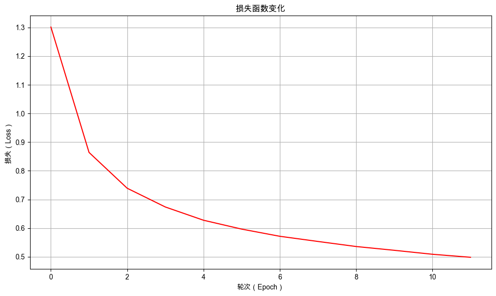

12. 改进Seq2Seq模型：反转输入#
通过本次任务，你将学会如何使用信息反转改进 Seq2Seq 生成式模型的效果。
12.1. 介绍#
上一章我们构建了一个Seq2Seq模型，使用生成式模型解决加法计算问题。虽然模型具备一定的泛化能力，但在评估集上的准确率只有 15.73%，本章我们将通过改进数据处理的方式来提高模型生成的效果。

12.2. 任务鸟瞰#
12.2.1. 任务介绍#
本次我们使用一个简单到匪夷所思的技巧 反转输入 来提高Seq2Seq模型生成的效果。反转输入是指将输入数据进行反转，比如输入 12+8，反转后为 8+21。

12.2.2. 模型结构#
这次的改动主要在数据处理上，只是将输入数据进行反转，未改变模型的结构。

输入反转前编码器处理过程：

反转输入后编码器处理过程：

由上面的两张图，我们可以看到输入数据反转后，有效数据位置更接近最终的输出，而填充的 Pad 位置在最前面，减少了编码时噪声的引入。直观上来说，输入反转后，这应该可以提高模型生成的效果，但具体效果还需通过实践来验证。
12.2.3. 环境版本#
照例我们先打印环境版本信息，方便大家进行代码复现。
from util import show_version
show_version()
本书愿景：
+------+--------------------------------------------------------+
| Info | 《动手学大语言模型》 |
+------+--------------------------------------------------------+
| 作者 | 吾辈亦有感 |
| 哔站 | https://space.bilibili.com/3546632320715420 |
| 定位 | 基于'从零构建'的理念，用实战帮助程序员快速入门大模型。 |
| 愿景 | 若让你的AI学习之路走的更容易一点，我将倍感荣幸！祝好😄 |
+------+--------------------------------------------------------+
环境信息：
+-------------+--------------+------------------------+
| Python 版本 | PyTorch 版本 | PyTorch Lightning 版本 |
+-------------+--------------+------------------------+
| 3.12.12 | 2.9.1 | 2.6.0 |
+-------------+--------------+------------------------+
12.3. 数据准备#
12.3.1. 自定义分词器#
在分词时，需要进行长度对齐，处理过程如下：

以 12+8 为例，最终会被处理成如下 json 格式：
[
{
"input_ids": [1, 2, 10, 8, 12, 12, 12],
"attention_mask": [1, 1, 1, 1, 0, 0, 0]
}
]
其中 input_ids 表示输入序列的 token ID 序列，attention_mask 表示输入序列的 pad-mask 序列。
12.3.1.1. 加法分词器的代码实现#
这部分代码和之前的一致，不再详细介绍，请自行查看代码。
from util import print_table
import torch
class SimpleTokenizer:
def __init__(self, vocab, pad_token="<|pad|>", unk_token="<|unk|>", bos_token="<|bos|>", eos_token="<|eos|>"):
"""
初始化简单分词器
"""
self.vocab = vocab
# 反向词汇表 (id -> token)
self.ids_to_tokens = {v: k for k, v in self.vocab.items()}
# 特殊token
self.pad_token = pad_token
self.pad_token_id = self.vocab[pad_token]
self.unk_token = unk_token
self.unk_token_id = self.vocab[unk_token]
self.bos_token = bos_token
self.bos_token_id = self.vocab[bos_token]
self.eos_token = eos_token
self.eos_token_id = self.vocab[eos_token]
self.special_tokens = [self.pad_token, self.unk_token, self.bos_token, self.eos_token]
# 词汇表大小
self.vocab_size = len(self.ids_to_tokens)
def encode(self, text):
# 将文本拆分为单个字符和特殊标记
tokens = self._tokenize_special_tokens(text)
# 将每个token转换为对应的token ID
input_ids = [self.vocab[token] for token in tokens if token in self.vocab]
return input_ids
def _tokenize_special_tokens(self, text):
# 识别并处理特殊标记
tokens = []
i = 0
while i < len(text):
# 检查是否匹配特殊标记
for token in self.special_tokens:
if text[i:i + len(token)] == token:
tokens.append(token)
i += len(token)
break
else:
# 如果不是特殊标记，则逐个字符处理
tokens.append(text[i])
i += 1
return tokens
def decode(self, input_ids, skip_special_tokens=True):
# 如果 input_ids 是 torch.Tensor，则转换为列表
if isinstance(input_ids, torch.Tensor):
input_ids = input_ids.squeeze().tolist()
# 将token ID序列转换为对应的字符
tokens = [self.ids_to_tokens.get(id) for id in input_ids]
# 去除开始符和结束符
if skip_special_tokens:
tokens = [token for token in tokens if token not in self.special_tokens]
return ''.join(tokens)
def __call__(self, texts, max_length=None, padding=False, return_tensors=False):
"""
分词器主调用函数
"""
is_single_text = False
if isinstance(texts, str):
is_single_text = True
texts = [texts]
# 编码所有文本
all_token_ids = []
all_attention_masks = []
for text in texts:
token_ids = self.encode(text)
# 处理填充和注意力掩码
if padding and max_length is not None:
attention_mask = [1] * len(token_ids) + [0] * (max_length - len(token_ids))
token_ids += [self.pad_token_id] * (max_length - len(token_ids))
else:
attention_mask = [1] * len(token_ids)
all_token_ids.append(token_ids)
all_attention_masks.append(attention_mask)
if is_single_text:
all_token_ids = all_token_ids[0]
all_attention_masks = all_attention_masks[0]
# 转换为tensor
if return_tensors:
all_token_ids = torch.tensor(all_token_ids, dtype=torch.long)
all_attention_masks = torch.tensor(all_attention_masks, dtype=torch.long)
return {'input_ids': all_token_ids, 'attention_mask': all_attention_masks}
def info(self):
"""
打印分词器的详细信息
"""
# 通用信息表
info_data = [
["Vocabulary Size", self.vocab_size],
["Padding Token", f"{self.pad_token} (ID: {self.pad_token_id})"],
["Unknown Token", f"{self.unk_token} (ID: {self.unk_token_id})"],
["Start Token", f"{self.bos_token} (ID: {self.bos_token_id})"],
["End Token", f"{self.eos_token} (ID: {self.eos_token_id})"]
]
print_table("General Information", field_names=["Information", "Value"], data=info_data)
# 字符到ID的映射表
print_table("Token Mapping", field_names=["Token", "ID"], data=[
[char, char_id] for char, char_id in self.vocab.items()
])
# 编码解码示例表
example = "12+8" # 示例输入
encode_result = self(example, max_length=7, padding=True)
print_table("Encoding and Decoding Example", field_names=["Field", "Value"], data=[
["Input", example],
["Token Ids", encode_result['input_ids']],
["Pad Mask", encode_result['attention_mask']],
["Decode", self.decode(encode_result['input_ids'])]
])
12.3.1.2. 创建加法分词器的实例#
# 定义词汇表，将每个字符映射到唯一的索引编号
vocab = {
"0": 0,
"1": 1,
"2": 2,
"3": 3,
"4": 4,
"5": 5,
"6": 6,
"7": 7,
"8": 8,
"9": 9,
"+": 10,
"=": 11,
"<|pad|>": 12,
"<|unk|>": 13,
"<|bos|>": 14,
"<|eos|>": 15
}
# 使用定义的词汇表创建分词器实例
tokenizer = SimpleTokenizer(vocab)
# 打印分词器信息
tokenizer.info()
General Information：
+-----------------+------------------+
| Information | Value |
+-----------------+------------------+
| Vocabulary Size | 16 |
| Padding Token | <|pad|> (ID: 12) |
| Unknown Token | <|unk|> (ID: 13) |
| Start Token | <|bos|> (ID: 14) |
| End Token | <|eos|> (ID: 15) |
+-----------------+------------------+
Token Mapping：
+---------+----+
| Token | ID |
+---------+----+
| 0 | 0 |
| 1 | 1 |
| 2 | 2 |
| 3 | 3 |
| 4 | 4 |
| 5 | 5 |
| 6 | 6 |
| 7 | 7 |
| 8 | 8 |
| 9 | 9 |
| + | 10 |
| = | 11 |
| <|pad|> | 12 |
| <|unk|> | 13 |
| <|bos|> | 14 |
| <|eos|> | 15 |
+---------+----+
Encoding and Decoding Example：
+-----------+---------------------------+
| Field | Value |
+-----------+---------------------------+
| Input | 12+8 |
| Token Ids | [1, 2, 10, 8, 12, 12, 12] |
| Pad Mask | [1, 1, 1, 1, 0, 0, 0] |
| Decode | 12+8 |
+-----------+---------------------------+
12.3.2. 实现带反转的数据转换器#
在数据转换器中，使用分词器将文本转换为指定长度的 token ID 序列以及对应的填充掩码，并控制是否进行反转。反转输入的效果如下图所示：

这里需要注意，反转输入时，除了对输入进行反转，还要对填充掩码进行反转。
class TextTransform:
def __init__(self, tokenizer: SimpleTokenizer, max_length=20, is_reverse=False):
self.tokenizer = tokenizer
self.max_length = max_length
self.is_reverse = is_reverse
def __call__(self, text):
if self.is_reverse:
# 进行反转
encoded = self.tokenizer(text, max_length=self.max_length, padding=True, return_tensors=True)
encoder_input_ids = encoded['input_ids']
encoder_pad_mask = encoded['attention_mask']
# 输入反转，注意：torch.flip 会创建新的张量，不会修改原张量
encoder_input_ids = torch.flip(encoder_input_ids, dims=[-1])
encoder_pad_mask = torch.flip(encoder_pad_mask, dims=[-1])
return {
"input_ids": encoder_input_ids,
"attention_mask": encoder_pad_mask,
}
else:
# 不进行反转
return self.tokenizer(text, max_length=self.max_length, padding=True, return_tensors=True)
txt = "12+8"
print("原始输入：", txt)
text_transform = TextTransform(tokenizer, max_length=7, is_reverse=False)
print("原始结果：", text_transform(txt))
text_transform_reversed = TextTransform(tokenizer, max_length=7, is_reverse=True)
print("反转结果：", text_transform_reversed(txt))
原始输入： 12+8
原始结果： {'input_ids': tensor([ 1, 2, 10, 8, 12, 12, 12]), 'attention_mask': tensor([1, 1, 1, 1, 0, 0, 0])}
反转结果： {'input_ids': tensor([12, 12, 12, 8, 10, 2, 1]), 'attention_mask': tensor([0, 0, 0, 1, 1, 1, 1])}
12.3.3. 构造加法数据集#
以 16+75=91 为，将每个加法算式和对应的答案都转化成如下 json 格式：
{
'question': '16+75',
'answer': '91',
'encoder_input_ids': tensor([1, 6, 10, 7, 5, 12, 12]),
'encoder_pad_mask': tensor([1, 1, 1, 1, 1, 0, 0]),
'decoder_target_ids': tensor([ 9, 1, 12, 12]),
'decoder_pad_mask': tensor([1, 1, 0, 0])
}
转化后的数据集将包含以下字段：
question: 加法算式的原始文本answer: 对应的答案（便于评估测试）encoder_input_ids: 加法算式经过分词器转换得到的 Token ID 序列（编码器的输入）encoder_pad_mask: 对应的填充掩码（编码器输入的填充掩码）decoder_target_ids: 答案经过分词器转换得到的 Token ID 序列（解码器的目标输出）decoder_pad_mask: 答案对应的填充掩码（解码器输出的填充掩码）
12.3.3.1. 加法数据集的代码实现#
from torch.utils.data import Dataset
class TextGenerationDataset(Dataset):
"""
文本生成任务的数据集类
用于处理序列到序列的文本生成任务，如加法计算等
"""
def __init__(self, questions, answers, encoder_transform: TextTransform,
decoder_transform: TextTransform):
"""
初始化数据集
Args:
questions: 输入问题列表
answers: 对应答案列表
encoder_transform: 编码器文本转换器
decoder_transform: 解码器文本转换器
"""
self.questions = questions # 存储输入问题列表
self.answers = answers # 存储对应答案列表
self.encoder_transform = encoder_transform # 编码器文本预处理工具
self.decoder_transform = decoder_transform # 解码器文本预处理工具
def __len__(self):
"""返回数据集大小"""
return len(self.questions)
def __getitem__(self, idx):
"""
获取指定索引的数据样本
Args:
idx: 样本索引
Returns:
dict: 包含处理后的输入输出数据的字典
"""
question = self.questions[idx] # 获取第idx个问题
answer = self.answers[idx] # 获取第idx个答案
# 对输入问题进行预处理
question_encoded = self.encoder_transform(question)
encoder_input_ids = question_encoded["input_ids"] # 编码器输入token ID序列
encoder_pad_mask = question_encoded["attention_mask"] # 编码器注意力掩码
# 对目标答案进行预处理
answer_encoded = self.decoder_transform(answer)
answer_ids = answer_encoded["input_ids"] # 解码器目标token ID序列
answer_pad_mask = answer_encoded["attention_mask"] # 解码器注意力掩码
# 返回完整的数据样本
return {
"question": question, # 原始问题文本
"answer": answer, # 原始答案文本
'encoder_input_ids': encoder_input_ids, # 编码器输入IDs
'encoder_pad_mask': encoder_pad_mask, # 编码器填充掩码
'decoder_target_ids': answer_ids, # 解码器目标IDs
'decoder_pad_mask': answer_pad_mask # 解码器填充掩码
}
@classmethod
def from_file(cls, file_path, encoder_transform: TextTransform, decoder_transform: TextTransform):
"""
从txt文件加载数据集的类方法
Args:
file_path: 数据文件路径
encoder_transform: 编码器文本转换器
decoder_transform: 解码器文本转换器
Returns:
TextGenerationDataset: 数据集实例
Note:
txt格式应包含算式，使用等号分隔问题和答案
例如: "123+456=579"
"""
questions = [] # 存储解析出的问题
answers = [] # 存储解析出的答案
# 读取txt文件
with open(file_path, 'r', encoding='utf-8') as f:
for line in f:
if line.strip() == '': # 跳过空行
continue
try:
# 查找等号的位置，将行分割为问题和答案
idx = line.find('=')
# 将样本添加到列表中: (question, answer)，answer中去掉"="以及最后的"\n"
question = line[:idx] # 等号前的部分作为问题
answer = line[idx + 1:].strip() # 等号后的部分作为答案（去除首尾空白）
questions.append(question)
answers.append(answer)
except Exception as e:
# 如果处理某行时出错，打印错误信息并跳过
print(f"Error processing line: {line}")
print(f"Error message: {e}")
continue
# 创建数据集实例
return cls(questions, answers, encoder_transform, decoder_transform)
12.3.3.2. 创建加法数据集的实例#
from pprint import pprint
# 1️⃣ 初始化分词器
tokenizer = SimpleTokenizer(vocab)
# 2️⃣ 初始化数据转换
encoder_transform = TextTransform(tokenizer, max_length=7, is_reverse=True) # 编码器的输入算式进行反转
decoder_transform = TextTransform(tokenizer, max_length=4) # 解码器的输出结果不进行反转
# 3️⃣ 加载数据集
file_path = "./dataset/addition_train.txt"
dataset = TextGenerationDataset.from_file(file_path, encoder_transform=encoder_transform,
decoder_transform=decoder_transform)
# 4️⃣ 打印数据样本，确认数据正确转换
pprint(dataset[0], sort_dicts=False)
{'question': '16+75',
'answer': '91',
'encoder_input_ids': tensor([12, 12, 5, 7, 10, 6, 1]),
'encoder_pad_mask': tensor([0, 0, 1, 1, 1, 1, 1]),
'decoder_target_ids': tensor([ 9, 1, 12, 12]),
'decoder_pad_mask': tensor([1, 1, 0, 0])}
12.3.4. 初始化数据模组#
加法数据模组继承自 LightningDataModule，用于统一管理训练、验证和测试数据集。
import lightning as L
from torch.utils.data import DataLoader
class TextDataModule(L.LightningDataModule):
"""
文本生成任务的数据模块
继承自LightningDataModule，用于管理训练、验证和测试数据的加载
"""
def __init__(self, batch_size, encoder_transform: TextTransform, decoder_transform: TextTransform, train_data_file,
val_data_file="", test_data_file=""):
"""
初始化数据模块
Args:
batch_size: 批次大小
encoder_transform: 编码器文本转换器
decoder_transform: 解码器文本转换器
train_data_file: 训练数据文件路径
val_data_file: 验证数据文件路径（可选）
test_data_file: 测试数据文件路径（可选）
"""
super().__init__()
self.batch_size = batch_size # 设置批次大小
self.encoder_transform = encoder_transform # 编码器文本预处理转换器
self.decoder_transform = decoder_transform # 解码器文本预处理转换器
self.train_data_file = train_data_file # 训练数据文件路径
self.val_data_file = val_data_file # 验证数据文件路径
self.test_data_file = test_data_file # 测试数据文件路径
# 初始化数据集属性
self.test_dataset = None # 测试数据集
self.val_dataset = None # 验证数据集
self.train_dataset = None # 训练数据集
def prepare_data(self):
"""
准备数据的方法
用于下载数据集或进行一次性数据预处理操作
"""
pass
def setup(self, stage=None):
"""
设置数据集的方法
"""
# 加载训练数据集
self.train_dataset = TextGenerationDataset.from_file(self.train_data_file,
encoder_transform=self.encoder_transform,
decoder_transform=self.decoder_transform)
# 加载验证数据集
if self.val_data_file == "":
# 如果没有指定验证集，则使用训练集作为验证集
self.val_dataset = self.train_dataset
else:
# 加载指定的验证数据集
self.val_dataset = TextGenerationDataset.from_file(self.val_data_file,
encoder_transform=self.encoder_transform,
decoder_transform=self.decoder_transform)
# 加载测试数据集
if self.test_data_file == "":
# 如果没有指定测试集，则使用训练集作为测试集
self.test_dataset = self.train_dataset
else:
# 加载指定的测试数据集
self.test_dataset = TextGenerationDataset.from_file(self.test_data_file,
encoder_transform=self.encoder_transform,
decoder_transform=self.decoder_transform)
def train_dataloader(self):
"""
返回训练数据加载器
Returns:
DataLoader: 训练数据的DataLoader对象
"""
return DataLoader(self.train_dataset, batch_size=self.batch_size, shuffle=True)
def val_dataloader(self):
"""
返回验证数据加载器
Returns:
DataLoader: 验证数据的DataLoader对象
"""
return DataLoader(self.val_dataset, batch_size=self.batch_size)
def test_dataloader(self):
"""
返回测试数据加载器
Returns:
DataLoader: 测试数据的DataLoader对象
"""
return DataLoader(self.test_dataset, batch_size=self.batch_size)
12.4. 构建模型#
在此次的改进中，未对模型进行任何改进。先定义 Encoder 和 Decoder 模型，然后定义一个完整的 Seq2Seq 模型。
12.4.1. 编码器的代码实现#
import torch
class Encoder(torch.nn.Module):
def __init__(self, vocab_size, embed_dim, hidden_dim, num_layers=1):
super(Encoder, self).__init__()
# 词嵌入层
self.embedding = torch.nn.Embedding(vocab_size, embed_dim)
# GRU
self.gru = torch.nn.GRU(
input_size=embed_dim,
hidden_size=hidden_dim,
num_layers=num_layers,
batch_first=True
)
def forward(self, input_ids):
"""
前向传播
参数:
input_ids (Tensor): 输入序列的token IDs, shape: [batch_size, seq_len]
返回:
outputs (Tensor): 编码器所有时间步的输出, shape: [batch_size, seq_len, hidden_dim]
hidden (Tensor): 编码器最后时间步的隐藏状态, shape: [num_layers, batch_size, hidden_dim]
"""
embedded = self.embedding(input_ids)
outputs, hidden = self.gru(embedded)
return outputs, hidden
12.4.2. 解码器的代码实现#
class Decoder(torch.nn.Module):
def __init__(self, vocab_size, embed_dim, hidden_dim, num_layers=1):
super(Decoder, self).__init__()
# 词嵌入层
self.embedding = torch.nn.Embedding(vocab_size, embed_dim)
# GRU
self.gru = torch.nn.GRU(
input_size=embed_dim,
hidden_size=hidden_dim,
num_layers=num_layers,
batch_first=True
)
# 输出层
self.output_layer = torch.nn.Linear(hidden_dim, vocab_size)
def forward(self, input_ids, hidden):
"""
前向传播
参数:
input_ids (Tensor): 目标序列的token IDs, shape: [batch_size, seq_len]
hidden (Tensor): 编码器的最终隐藏状态, shape: [num_layers, batch_size, hidden_dim]
返回:
output_logits (Tensor): 每个时间步的词汇表分布, shape: [batch_size, seq_len, vocab_size]
hidden (Tensor): 解码器最后时间步的隐藏状态, shape: [num_layers, batch_size, hidden_dim]
"""
embedded = self.embedding(input_ids)
outputs, hidden = self.gru(embedded, hidden)
output_logits = self.output_layer(outputs)
return output_logits, hidden
def forward_step(self, input_id, hidden):
"""
单步解码：
- 输入：当前时间步的输入和隐藏状态
- 输出：当前时间步的输出和新的隐藏状态
"""
token_embed = self.embedding(input_id)
output, hidden = self.gru(token_embed, hidden)
output_logits = self.output_layer(output)
return output_logits, hidden
12.4.3. 完整的 Seq2Seq 模型#
class SequenceGenerator(L.LightningModule):
def __init__(self, tokenizer: SimpleTokenizer, embed_dim, hidden_dim, num_layers=1, learning_rate=1e-3,
generate_max_length=4):
super().__init__()
# 实例化编码器和解码器
self.encoder = Encoder(tokenizer.vocab_size, embed_dim, hidden_dim, num_layers)
self.decoder = Decoder(tokenizer.vocab_size, embed_dim, hidden_dim, num_layers)
self.tokenizer = tokenizer
self.learning_rate = learning_rate
self.generate_max_length = generate_max_length # 添加最大长度属性
# 用于存储训练和验证过程中的指标
self.train_step_losses = []
self.train_epoch_losses = []
self.validation_step_outputs = []
self.validation_epoch_outputs = []
# 示例输入
self.example_input_array = (
torch.randint(0, tokenizer.vocab_size, (32, 10), dtype=torch.long),
torch.randint(0, tokenizer.vocab_size, (32, 5), dtype=torch.long)
)
def forward(self, input_ids, target_ids=None):
"""前向传播"""
batch_size = input_ids.size(0)
# 1. 编码阶段：提取输入序列特征
encoder_outputs, encoder_hidden = self.encoder(input_ids)
# 2. 解码阶段：生成输出序列
if target_ids is not None:
# 训练过程：使用真实目标序列作为输入（teacher forcing）
return self._decode_with_targets(encoder_outputs, encoder_hidden, target_ids, self.generate_max_length)
else:
# 推理过程：自回归生成序列
return self._decode_autoregressive(encoder_outputs, encoder_hidden, batch_size, self.generate_max_length)
def _decode_with_targets(self, encoder_outputs, encoder_hidden, target_ids, generate_max_length):
"""
训练阶段解码：使用teacher forcing
"""
batch_size = encoder_outputs.size(0)
# 初始化解码器输入为起始标记（这里假设用空格作为起始符，ID为12）
decoder_input = torch.full((batch_size, 1), self.tokenizer.bos_token_id, device=encoder_outputs.device,
dtype=torch.long)
decoder_hidden = encoder_hidden
decoder_outputs = []
# 使用目标序列作为输入，逐步解码
for i in range(generate_max_length):
decoder_output, decoder_hidden = self.decoder.forward_step(decoder_input, decoder_hidden)
decoder_outputs.append(decoder_output)
# 使用真实目标作为下一步输入
decoder_input = target_ids[:, i].unsqueeze(1)
# 拼接所有时间步的输出
decoder_outputs = torch.cat(decoder_outputs, dim=1)
return torch.nn.functional.log_softmax(decoder_outputs, dim=-1)
def _decode_autoregressive(self, encoder_outputs, encoder_hidden, batch_size, generate_max_length):
"""
推理阶段解码：自回归生成
"""
# 初始化解码器输入为起始标记
decoder_input = torch.full((batch_size, 1), self.tokenizer.bos_token_id,
device=encoder_outputs.device, dtype=torch.long)
decoder_hidden = encoder_hidden
decoder_outputs = []
for i in range(generate_max_length):
# 单步解码
decoder_output, decoder_hidden = self.decoder.forward_step(decoder_input, decoder_hidden)
decoder_outputs.append(decoder_output)
# 使用模型预测作为下一步输入
_, topi = decoder_output.topk(1)
decoder_input = topi.squeeze(-1).detach()
# 拼接所有时间步的输出
decoder_outputs = torch.cat(decoder_outputs, dim=1)
return torch.nn.functional.log_softmax(decoder_outputs, dim=-1)
def training_step(self, batch, batch_idx):
"""训练步骤"""
input_ids = batch["encoder_input_ids"]
target_ids = batch["decoder_target_ids"]
# 前向传播
outputs = self(input_ids, target_ids) # 训练时传入target_ids
# 计算损失 - 需要调整维度以适应交叉熵损失
# outputs: [batch_size, seq_len, vocab_size]
# target_ids: [batch_size, seq_len]
loss = torch.nn.functional.cross_entropy(
outputs.view(-1, outputs.size(-1)),
target_ids.view(-1)
)
"""
对于序列生成任务，通常我们会采用以下几种方式来计算准确率：
1. 序列级别准确率：整个生成序列完全匹配目标序列才算正确
2. token级别准确率：计算所有token中预测正确的比例
3. BLEU/ROUGE等评价指标：更复杂的文本生成评价指标
"""
# 计算token级别的准确率
preds = torch.argmax(outputs, dim=-1)
mask = (target_ids != self.tokenizer.pad_token_id) # 忽略填充位置
correct_tokens = ((preds == target_ids) & mask).sum().float()
total_tokens = mask.sum().float()
token_acc = correct_tokens / total_tokens
# 计算序列级别的准确率
# 对于每个序列，只有当所有非填充位置都预测正确才算正确
seq_correct = ((preds == target_ids) | ~mask).all(dim=1).float().mean()
# 记录日志
self.log('train_loss', loss)
self.log('train_token_acc', token_acc)
self.log('train_seq_acc', seq_correct)
# 存储损失以便后续使用
self.train_step_losses.append(loss.detach())
return loss
def validation_step(self, batch, batch_idx):
"""验证步骤"""
input_ids = batch["encoder_input_ids"]
target_ids = batch["decoder_target_ids"]
# 前向传播
outputs = self(input_ids)
# 计算预测值
preds = torch.argmax(outputs, dim=-1)
# 创建掩码以忽略填充值
mask = (target_ids != self.tokenizer.pad_token_id)
# 计算token级别的准确率
correct_tokens = ((preds == target_ids) & mask).sum().float()
total_tokens = mask.sum().float()
token_acc = correct_tokens / total_tokens if total_tokens > 0 else torch.tensor(0.0)
# 计算序列级别的准确率
seq_correct = ((preds == target_ids) | ~mask).all(dim=1).float().mean()
# 保存结果供epoch结束时使用
self.validation_step_outputs.append({
'preds': preds,
'target_ids': target_ids,
'token_acc': token_acc,
'seq_acc': seq_correct
})
if batch_idx % 50 == 0:
print(
f"Validation Step {batch_idx}: Token Accuracy={token_acc.item():.4f}, Seq Accuracy={seq_correct.item():.4f}")
def on_train_epoch_end(self):
"""在每个训练epoch结束时计算整体损失"""
if self.train_step_losses: # 确保列表不为空
# 计算并记录平均训练损失
avg_train_loss = torch.stack(self.train_step_losses).mean()
self.train_epoch_losses.append({
"epoch": self.current_epoch,
"loss": avg_train_loss.item() # 转换为 Python 数值
})
# 清空列表为下一个 epoch 做准备
self.train_step_losses.clear()
def on_validation_epoch_end(self):
"""在每个验证epoch结束时计算整体准确率"""
# 汇总所有预测结果和标签
all_preds = torch.cat([x['preds'] for x in self.validation_step_outputs])
all_target_ids = torch.cat([x['target_ids'] for x in self.validation_step_outputs])
# 1. 计算序列（样本）级别的准确率
# 创建掩码以标识非填充位置
mask = (all_target_ids != self.tokenizer.pad_token_id)
# 计算每个序列是否完全正确（所有非填充位置都预测正确）
seq_correct = ((all_preds == all_target_ids) | ~mask).all(dim=1)
# 序列总数
total_sequences = all_preds.size(0)
# 正确预测的序列数
correct_sequences = seq_correct.sum().item()
# 序列级别准确率
seq_acc = correct_sequences / total_sequences if total_sequences > 0 else 0.0
# 2. 计算 Token 级别的准确率
# 计算所有非填充位置的预测总数
total_tokens = mask.sum().item()
# 计算所有非填充位置预测正确的总数
correct_tokens = ((all_preds == all_target_ids) & mask).sum().item()
# Token 级别准确率
token_acc = correct_tokens / total_tokens if total_tokens > 0 else 0.0
# 3. 将评估结果保存到 validation_epoch_outputs 列表中
self.validation_epoch_outputs.append({
"epoch": self.current_epoch,
"总样本数": total_sequences,
"正确样本数": correct_sequences,
"样本准确率": round(seq_acc, 4),
"总Token数": total_tokens,
"正确Token数": correct_tokens,
"Token准确率": round(token_acc, 4)
})
# 记录日志
self.log('total_sequences', total_sequences)
self.log('correct_sequences', correct_sequences)
self.log('seq_acc', seq_acc)
self.log('total_tokens', total_tokens)
self.log('correct_tokens', correct_tokens)
self.log('token_acc', token_acc)
# 清空缓存
self.validation_step_outputs.clear()
def clear_cache(self):
"""清除缓存"""
self.train_step_losses.clear()
self.train_epoch_losses.clear()
self.validation_step_outputs.clear()
self.validation_epoch_outputs.clear()
def configure_optimizers(self):
"""配置优化器"""
optimizer = torch.optim.Adam(self.parameters(), lr=self.learning_rate)
return optimizer
def generate(self, input_ids):
"""
根据输入序列生成输出序列文本
参数:
input_ids (Tensor): 输入序列的token IDs, shape: [batch_size, seq_len]
返回:
generated_texts (list): 生成的文本列表
"""
# 1. 调用模型的 forward 方法 (推理模式，无 target_ids) 生成 logits
generated_logits = self(input_ids) # Shape: [batch_size, generate_max_length, vocab_size]
# 2. 获取概率最高的 token ID
generated_ids = torch.argmax(generated_logits, dim=-1) # Shape: [batch_size, generate_max_length]
# 3. 直接使用 tokenizer.decode 方法将 token ID 转换为文本
generated_texts = []
for i in range(generated_ids.size(0)): # 遍历 batch 中的每个样本
# 调用 tokenizer 的 decode 方法，并跳过特殊 token
text = self.tokenizer.decode(generated_ids[i], skip_special_tokens=True)
generated_texts.append(text)
return generated_texts
12.4.3.1. 查看模型的详细信息#
from lightning.pytorch.utilities.model_summary import ModelSummary
# 创建加法计算模型实例：词嵌入维度128，隐藏层维度128
model = SequenceGenerator(tokenizer, embed_dim=128, hidden_dim=128)
# 使用 ModelSummary 获取模型详细信息
summary = ModelSummary(model, max_depth=-1)
print(summary)
| Name | Type | Params | Mode | FLOPs | In sizes | Out sizes
-----------------------------------------------------------------------------------------------------------------------------------
0 | encoder | Encoder | 101 K | train | 62.9 M | [32, 10] | [[32, 10, 128], [1, 32, 128]]
1 | encoder.embedding | Embedding | 2.0 K | train | 0 | [32, 10] | [32, 10, 128]
2 | encoder.gru | GRU | 99.1 K | train | 62.9 M | [32, 10, 128] | [[32, 10, 128], [1, 32, 128]]
3 | decoder | Decoder | 103 K | train | 0 | ? | ?
4 | decoder.embedding | Embedding | 2.0 K | train | 0 | [32, 1] | [32, 1, 128]
5 | decoder.gru | GRU | 99.1 K | train | 25.2 M | [[32, 1, 128], [1, 32, 128]] | [[32, 1, 128], [1, 32, 128]]
6 | decoder.output_layer | Linear | 2.1 K | train | 524 K | [32, 1, 128] | [32, 1, 16]
-----------------------------------------------------------------------------------------------------------------------------------
204 K Trainable params
0 Non-trainable params
204 K Total params
0.817 Total estimated model params size (MB)
7 Modules in train mode
0 Modules in eval mode
88.6 M Total Flops
从模型的详细信息中可以看到，本次的模型结构与前一章的模型一模一样，未做任何改变。我们这次只单纯改变输入数据的处理方式，观察对模型训练效果的影响。
12.5. 模型训练与评估#
12.5.1. 初始化模型和训练器#
# 超参配置
batch_size = 50
encoder_max_length = 7
decoder_max_length = 4
# 1️⃣ 初始化分词器
tokenizer = SimpleTokenizer(vocab)
# 2️⃣ 初始化编码器和解码器的数据转换
encoder_transform = TextTransform(tokenizer, max_length=encoder_max_length, is_reverse=True)
decoder_transform = TextTransform(tokenizer, max_length=decoder_max_length)
# 3️⃣ 加载数据模组
train_data_file = "./dataset/addition_train.txt"
val_data_file = "./dataset/addition_val.txt"
# 此处的直接使用评估集进行评估
datamodule = TextDataModule(batch_size=batch_size, encoder_transform=encoder_transform,
decoder_transform=decoder_transform, train_data_file=train_data_file, val_data_file=val_data_file)
# 4️⃣ 初始化模型
model = SequenceGenerator(tokenizer, embed_dim=128, hidden_dim=128)
# 5️⃣ 初始化训练器
# max_epochs=12: 最大训练轮数为12
# log_every_n_steps=3: 每3个步骤记录一次日志
# check_val_every_n_epoch=1: 每1个epoch进行一次验证
# num_sanity_val_steps=0: 验证集的初始检查次数，设置为0表示不进行初始检查
# enable_progress_bar=False: 不显示进度条
trainer = L.Trainer(max_epochs=12, log_every_n_steps=3, check_val_every_n_epoch=1, num_sanity_val_steps=0,
enable_progress_bar=False)
💡 Tip: For seamless cloud uploads and versioning, try installing [litmodels](https://pypi.org/project/litmodels/) to enable LitModelCheckpoint, which syncs automatically with the Lightning model registry.
GPU available: True (mps), used: True
TPU available: False, using: 0 TPU cores
12.5.2. 训练前评估#
训练前评估为模型性能建立初始性能基准。
# 直接调用验证函数进行训练前评估
trainer.validate(model=model, datamodule=datamodule)
Validation Step 0: Token Accuracy=0.0255, Seq Accuracy=0.0000
Validation Step 50: Token Accuracy=0.0377, Seq Accuracy=0.0000
┏━━━━━━━━━━━━━━━━━━━━━━━━━━━┳━━━━━━━━━━━━━━━━━━━━━━━━━━━┓ ┃ Validate metric ┃ DataLoader 0 ┃ ┡━━━━━━━━━━━━━━━━━━━━━━━━━━━╇━━━━━━━━━━━━━━━━━━━━━━━━━━━┩ │ correct_sequences │ 3.0 │ │ correct_tokens │ 355.0 │ │ seq_acc │ 0.0006000000284984708 │ │ token_acc │ 0.02259131893515587 │ │ total_sequences │ 5000.0 │ │ total_tokens │ 15714.0 │ └───────────────────────────┴───────────────────────────┘
[{'total_sequences': 5000.0,
'correct_sequences': 3.0,
'seq_acc': 0.0006000000284984708,
'total_tokens': 15714.0,
'correct_tokens': 355.0,
'token_acc': 0.02259131893515587}]
在评估集的 5000 条数据上，只有 3 个样本的预测结果正确，模型训练前预测正确率为 0.06%，不具备预测效果。
12.5.3. 训练模型#
调用 trainer.fit() 训练 12 个轮次。
model.clear_cache()
trainer.fit(model=model, datamodule=datamodule)
┏━━━┳━━━━━━━━━┳━━━━━━━━━┳━━━━━━━━┳━━━━━━━┳━━━━━━━━┳━━━━━━━━━━┳━━━━━━━━━━━━━━━━━━━━━━━━━━━━━━━┓ ┃ ┃ Name ┃ Type ┃ Params ┃ Mode ┃ FLOPs ┃ In sizes ┃ Out sizes ┃ ┡━━━╇━━━━━━━━━╇━━━━━━━━━╇━━━━━━━━╇━━━━━━━╇━━━━━━━━╇━━━━━━━━━━╇━━━━━━━━━━━━━━━━━━━━━━━━━━━━━━━┩ │ 0 │ encoder │ Encoder │ 101 K │ train │ 62.9 M │ [32, 10] │ [[32, 10, 128], [1, 32, 128]] │ │ 1 │ decoder │ Decoder │ 103 K │ train │ 0 │ ? │ ? │ └───┴─────────┴─────────┴────────┴───────┴────────┴──────────┴───────────────────────────────┘
Trainable params: 204 K Non-trainable params: 0 Total params: 204 K Total estimated model params size (MB): 0 Modules in train mode: 7 Modules in eval mode: 0 Total FLOPs: 88.6 M
Validation Step 0: Token Accuracy=0.5350, Seq Accuracy=0.0800
Validation Step 50: Token Accuracy=0.5220, Seq Accuracy=0.0800
Validation Step 0: Token Accuracy=0.6178, Seq Accuracy=0.1800
Validation Step 50: Token Accuracy=0.6164, Seq Accuracy=0.1800
Validation Step 0: Token Accuracy=0.6051, Seq Accuracy=0.1000
Validation Step 50: Token Accuracy=0.6164, Seq Accuracy=0.2200
Validation Step 0: Token Accuracy=0.6624, Seq Accuracy=0.1800
Validation Step 50: Token Accuracy=0.5912, Seq Accuracy=0.1600
Validation Step 0: Token Accuracy=0.6561, Seq Accuracy=0.1800
Validation Step 50: Token Accuracy=0.5975, Seq Accuracy=0.1200
Validation Step 0: Token Accuracy=0.6752, Seq Accuracy=0.2400
Validation Step 50: Token Accuracy=0.6415, Seq Accuracy=0.2200
Validation Step 0: Token Accuracy=0.7134, Seq Accuracy=0.2600
Validation Step 50: Token Accuracy=0.5975, Seq Accuracy=0.1400
Validation Step 0: Token Accuracy=0.7134, Seq Accuracy=0.2600
Validation Step 50: Token Accuracy=0.6289, Seq Accuracy=0.1800
Validation Step 0: Token Accuracy=0.6943, Seq Accuracy=0.2600
Validation Step 50: Token Accuracy=0.6541, Seq Accuracy=0.2600
Validation Step 0: Token Accuracy=0.6879, Seq Accuracy=0.2400
Validation Step 50: Token Accuracy=0.7233, Seq Accuracy=0.3600
Validation Step 0: Token Accuracy=0.7325, Seq Accuracy=0.3400
Validation Step 50: Token Accuracy=0.6730, Seq Accuracy=0.2800
Validation Step 0: Token Accuracy=0.7134, Seq Accuracy=0.2800
Validation Step 50: Token Accuracy=0.6541, Seq Accuracy=0.2200
`Trainer.fit` stopped: `max_epochs=12` reached.
12.5.3.1. 训练过程可视化#
绘制训练过程中损失值的变化曲线。
from util import plot_training_loss
plot_training_loss(model.train_epoch_losses)

12.5.3.2. 查看模型评估记录#
查看训练过程中的评估结果，观察模型在验证集上的表现。
from util import show_table
show_table(model.validation_epoch_outputs)
| epoch | 总样本数 | 正确样本数 | 样本准确率 | 总Token数 | 正确Token数 | Token准确率 | |
|---|---|---|---|---|---|---|---|
| 0 | 0 | 5000 | 318 | 0.0636 | 15714 | 8142 | 0.5181 |
| 1 | 1 | 5000 | 604 | 0.1208 | 15714 | 9190 | 0.5848 |
| 2 | 2 | 5000 | 697 | 0.1394 | 15714 | 9586 | 0.6100 |
| 3 | 3 | 5000 | 827 | 0.1654 | 15714 | 9806 | 0.6240 |
| 4 | 4 | 5000 | 966 | 0.1932 | 15714 | 10138 | 0.6452 |
| 5 | 5 | 5000 | 1095 | 0.2190 | 15714 | 10380 | 0.6606 |
| 6 | 6 | 5000 | 1140 | 0.2280 | 15714 | 10475 | 0.6666 |
| 7 | 7 | 5000 | 1280 | 0.2560 | 15714 | 10691 | 0.6803 |
| 8 | 8 | 5000 | 1310 | 0.2620 | 15714 | 10775 | 0.6857 |
| 9 | 9 | 5000 | 1319 | 0.2638 | 15714 | 10824 | 0.6888 |
| 10 | 10 | 5000 | 1333 | 0.2666 | 15714 | 10873 | 0.6919 |
| 11 | 11 | 5000 | 1337 | 0.2674 | 15714 | 10810 | 0.6879 |
12.5.4. 训练后评估#
与训练前的评估结果对比，确认模型训练效果是否有效。
# 直接调用验证函数进行训练前评估
trainer.validate(model=model, datamodule=datamodule)
Validation Step 0: Token Accuracy=0.7134, Seq Accuracy=0.2800
Validation Step 50: Token Accuracy=0.6541, Seq Accuracy=0.2200
┏━━━━━━━━━━━━━━━━━━━━━━━━━━━┳━━━━━━━━━━━━━━━━━━━━━━━━━━━┓ ┃ Validate metric ┃ DataLoader 0 ┃ ┡━━━━━━━━━━━━━━━━━━━━━━━━━━━╇━━━━━━━━━━━━━━━━━━━━━━━━━━━┩ │ correct_sequences │ 1337.0 │ │ correct_tokens │ 10810.0 │ │ seq_acc │ 0.26739999651908875 │ │ token_acc │ 0.6879215836524963 │ │ total_sequences │ 5000.0 │ │ total_tokens │ 15714.0 │ └───────────────────────────┴───────────────────────────┘
[{'total_sequences': 5000.0,
'correct_sequences': 1337.0,
'seq_acc': 0.26739999651908875,
'total_tokens': 15714.0,
'correct_tokens': 10810.0,
'token_acc': 0.6879215836524963}]
模型训练后，5000 条评估数据有 1337 个样本的预测结果正确，模型训练后预测正确率从 0.06% 提升为 26.73%，说明模型训练有效。相对上一章 15.73% 的准确率提升也非常明显。
12.6. 使用模型进行预测#
使用一些测试算式进行推理预测，直观观察模型的预测效果。
from util import print_aigc_results
# 1️⃣ 创建一些测试问题和答案
questions = ["829+33", "58+136", "22+593", "243+269", "1+1"]
answers = ["862", "194", "615", "512", "2"]
# 2️⃣ 使用与训练时统一的编码器 transform 方法对输入进行处理
question_encoded = encoder_transform(questions)
encoder_input_ids = question_encoded["input_ids"]
# 3️⃣ 使用模型进行预测
generated_texts = model.generate(encoder_input_ids)
# 4️⃣ 输出预测结果
print_aigc_results(questions, answers, generated_texts)
🎯 生成结果 (准确率: 3/5 = 60.00%)：
+---------+--------+--------+------+
| 输入 | 真实值 | 预测值 | 标记 |
+---------+--------+--------+------+
| 829+33 | 862 | 862 | ☑ |
| 58+136 | 194 | 198 | ☒ |
| 22+593 | 615 | 615 | ☑ |
| 243+269 | 512 | 521 | ☒ |
| 1+1 | 2 | 2 | ☑ |
+---------+--------+--------+------+
本次的加法计算模型在这几条测试示例上，预测正确率达到了 60%，终于有些效果了。那么问题来了，为什么只是单纯的将输入进行反转，就能有这么明显的提升呢？
思考一下：为何简单反转输入数据，就能明显提升模型效果？
RNN 的单向流动限制了模型捕捉双向上下文的能力，⽆法很好的处理⻓距离依赖关系，容易遗忘最初的输入。反转输入缩小了信息的传递距离，降低了信息的损耗。
12.7. 本章小结#
本章主要从数据处理的角度优化 Seq2Seq 模型的生成效果。通过简单的反转输入数据，就能将评估集的准确率从 15.73% 提升为 26.73%，由此可见缩短信息传递距离，能够有效提升模型效果，这也为后续理解 Transformer 模型提供了基础。在下一章中，我们将从模型结构角度，提高模型对信息的利用效率，从而进一步优化 Seq2Seq 模型。